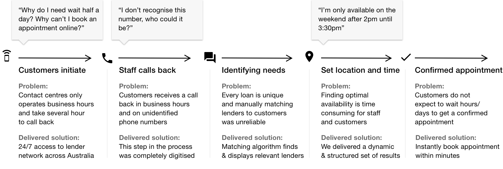

CommBank Digital Appointment Booking System (2018)
Connecting with a CBA lender is one of the first steps in home buying. We digitised a decade old process that relied on a manual call-back process performed by a call-centre staff that resulted in customers waiting hours and sometimes days for a response. This project is one of several strategic investments to improve infrastructure capabilities and rethink how we deliver optimal customer experience for CommBank's largest business (home lending).
Initial state (min 5+ hours for an appointment)
Iterative and collaborative design process with business stakeholders, analysts, developers, product owners and designers
We started interviewing and observing users in our call-centres and branches around Sydney, Australia. In parallel, we began producing prototypes we could use to present and gather feedback from other design teams, project team, subject matter experts, management and customers.
CommBank's research lab, 18 participants, 3 rounds over 4 months
We start by establishing customer's context. A mortgage is a life-changing financial decision for most Australians. Many customers prefer speaking and transacting with a lender face-to-face while others may prefer to conveniently speak on the phone.
By segmenting customers into face-to-face or virtual appointments. This small, but powerful optimisation allows us to skip redundant questions like entering a location if you prefer a phone call.

We provide a level playing field for all appointment channels — meet in branch, at a cafe, at your home or a phone call with a lender. By giving customers choice, they benefit with more options and added flexibility
An overarching design theme was to balance the amount of information displayed in a mobile context.
On any given day, there could be less than 3 available appointments or over 100 — our design caters for everything in between while never displaying more than 9 options per day.
Flexible and structured design pattern that responds to availability in the lender network.
Above: CommBank Marketing Apr 2019